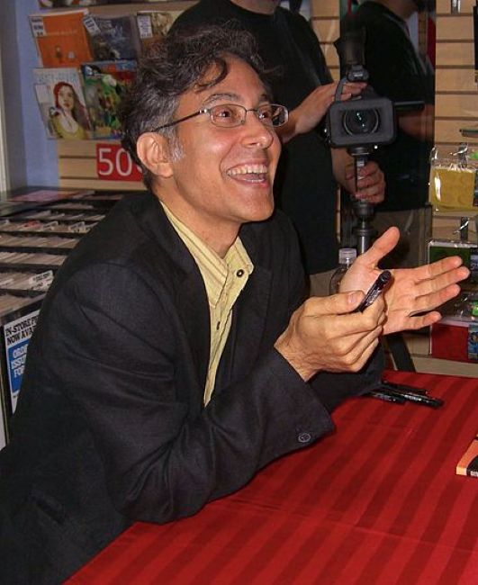
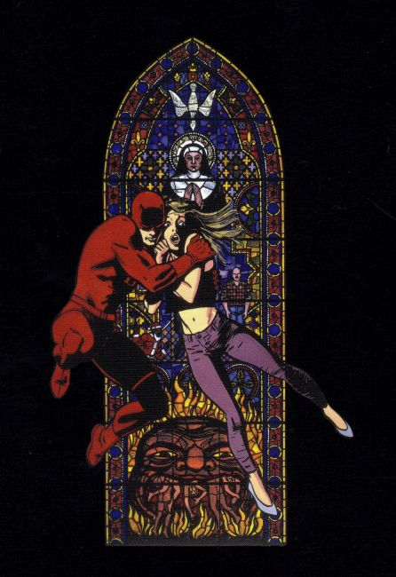
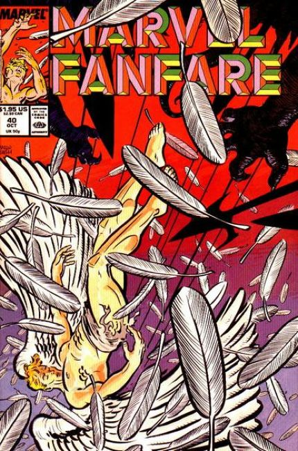
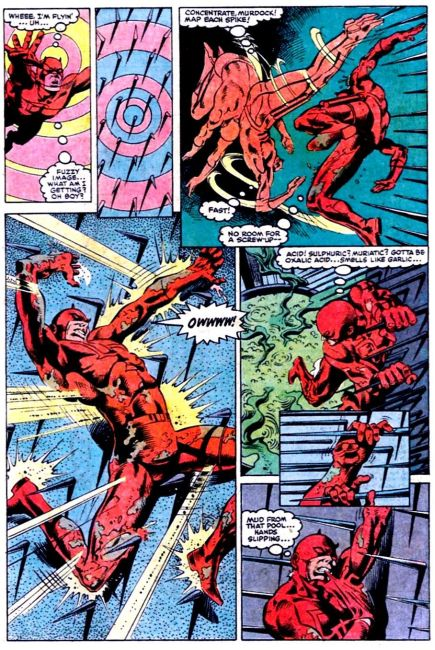
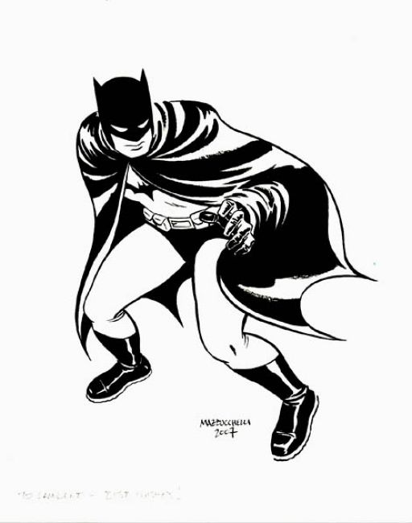
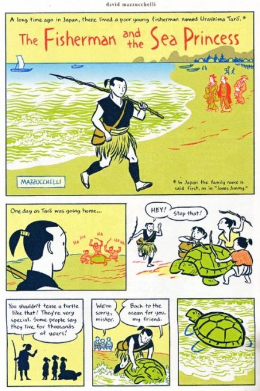
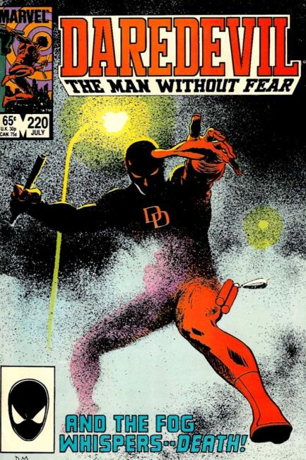
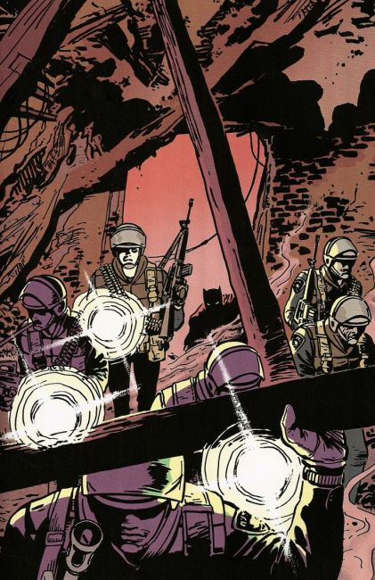
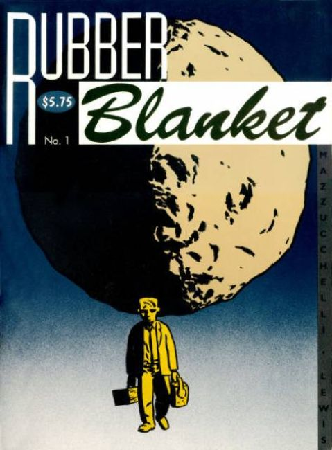

×








❮
❯
David John Mazzucchelli (born September 21, 1960) is an American comics artist and writer, known for his work on seminal superhero comic book storylines Daredevil: Born Again and Batman: Year One, as well as for graphic novels in other genres, such as Asterios Polyp and City of Glass: The Graphic Novel. He is also an instructor who teaches comic book storytelling at the School of Visual Arts in Manhattan.
Awards
2009 Los Angeles Times Book Prize Graphic Novel Award
Japan-U.S. Friendship Commission Creative Artist Fellowship
Morning Manga Fellowship
New Jersey State Council on the Arts
Erwin Swann Award, Swann Foundation for Caricature and Cartoon
2012 HQ Mix Award for Foreign Artist (for Asterios Polyp)
2012 HQ Mix Award for Foreign Writer (for Asterios Polyp)
Bibliography
Interior comic work includes:
Shang-Chi, Master of Kung Fu #121: "Passing Strangers!" (with Steven Grant, Marvel, 1983)
The Further Adventures of Indiana Jones #14: "Demons" (with David Michelinie, Marvel, 1984)
World's Finest Comics #302: "No Rest for Heroes!" (with David Anthony Kraft, DC Comics, 1984)
Daredevil (Marvel):
"Every Good and Perfect Gift..." (with Dennis O'Neil, in #206, 1984)
"The Deadliest Night of My Life!" (with Harlan Ellison and Arthur Byron Cover, in #208, 1984)
"Blast from the Past" (with Arthur Byron Cover, in #209, 1984)
"The War on Micah Synn" (with Dennis O'Neil, in #210-214, 1984–1985)
"Prophecy" (with Dennis O'Neil, in #215, 1985)
"The Second Secret" (with Dennis O'Neil, in #216-217, 1985)
"Fog" (with Dennis O'Neil, in #220-221, 1985)
"Fear in a Handful of Dust..." (with Dennis O'Neil, in #222, 1985)
"The Price" (with Dennis O'Neil and Jim Shooter, in #223, 1985)
"...And Then You Die!" (with Dennis O'Neil, in #225, 1985)
"Warriors" (with Dennis O'Neil and Frank Miller, in #226, 1986)
"Born Again" (with Frank Miller, in #227-233, 1986)
Star Wars #84: "Seoul Searching" (with Roy Richardson, Marvel, 1984)
Marvel Team-Up Annual #7: "No Place to Run" (with Bob DeNatale, co-feature, Marvel, 1984)
Batman #404-407: "Year One" (with Frank Miller, DC Comics, 1987)
X-Factor #16: "Playing with Fire!" (with Louise Simonson, Marvel, 1987)
Marvel Fanfare #40: "Chiaroscuro" (with Ann Nocenti, anthology, Marvel, 1988)
Rubber Blanket #1-3 (script and art, self-published anthology, 1991–1993)
Nozone #3, 5-6 (script and art, anthology, 1991–1995)
Drawn & Quarterly (script and art, anthology):
"It's a Beautiful Day in the Epsilon-Neighborhood" (in vol. 1 #9, 1992)
"Rates of Exchange" (in vol. 2 #2, 1994)
Bill & Ted's Excellent Comic Book #2 (with Stephen DeStefano – inks on Evan Dorkin, Marvel, 1992)
Snake Eyes #3: "Phobia" (script and art, anthology, Fantagraphics Books, 1993)
Paul Auster's City of Glass (with Paul Karasik, graphic novel, Avon Books, 1994)
Zero Zero #2, 11, 27 (script and art, anthology, Fantagraphics Books, 1995–2000)
Jingle Belle #1: "Miserable on 34th Street" (inks on Stephen DeStefano, written by Paul Dini, Oni Press, 1999)
Superman and Batman: World's Funnest: "Last Imp Standing!" (with Evan Dorkin, among other artists, one-shot, DC Comics, 2000)
Little Lit: Folklore & Fairy Tale Funnies: "The Fisherman and the Sea Princess" (script and art, anthology graphic novel, HarperCollins, 2000)
The Comics Journal Special #1: "The Boy Who Loved Comics" (script and art, co-feature, Fantagraphics Books, 2001)
Asterios Polyp (script and art, graphic novel, Pantheon Books, 2009)
Fairy Tale Comics: "Give Me the Shudders" (script and art, anthology graphic novel, First Second, 2013)
Covers only
Rom Spaceknight #61 (Marvel, 1984)
Marvel Age #36 (Marvel, 1986)
Amazing Heroes #102 (Fantagraphics Books, 1986)
Snake Eyes #1-2 (Fantagraphics Books, 1990–1992)
Cheval Noir #40 (Dark Horse, 1993)
The Comics Journal #188, 194 (Fantagraphics Books, 1996–1997)